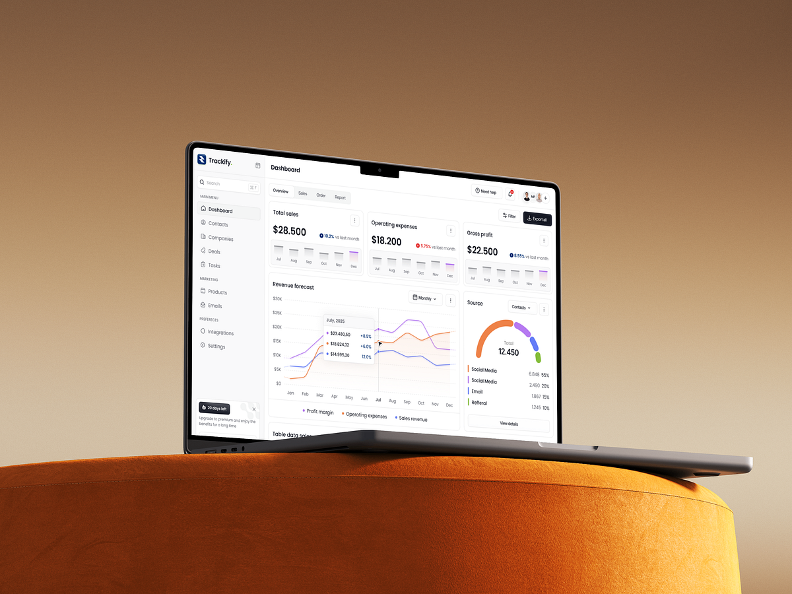

视觉参照 Trackify 白区黑白调；样例文案与场景一律取自 fangzhou/refactor-demo（工作台、TG 采集、素材、创建项目等），方便对照现有 Demo。外层展示紫底不在范围；重复类名在本规范统一命名。
本文件定义方舟后台主界面（侧栏 + 顶栏 + 白底内容区）视觉与控件口径，覆盖重构 Demo 中已出现的通用组件。业务专属大块（素材详情布局、文章编辑器画布、TG 频道格子等）只规范其中复用的基础控件，不逐页画业务线框。
#F4F4F5），不用强彩色高亮整行。#141414（更凹），主画布 #181818，卡片 #1f1f1f，边线 #2b2b2b，正文 #e4e4e4 / #cccccc。--accent ↔ --on-ink）。--accent 紫在落地时应收敛为黑主色。app.css。对照 refactor-demo 页面/JS 高频类名盘点。状态：已覆盖 = 0.1 已有；0.2 补齐 = 本节新增；统一 = 多种 Demo 类名归并到同一规范名。
| 规范名 | Demo 常见类 / 场景 | 状态 |
|---|---|---|
| Button | .btn .btn-primary .btn-ghost .btn-danger .btn-sm .btn-block | 0.2 补 Danger / Block |
| Field / Input | .field input select textarea .hint | 0.2 补 Select / Textarea / Hint |
| Search | 侧栏 .nav-search、列表搜索框 | 已覆盖 |
| Checkbox | .check-item .check-inline 多选项目/岗位 | 0.2 补齐 |
| Switch | .switch 水印/可选功能开关 | 0.2 补齐 |
| Tabs（统一） | .tabs .seg-tabs .config-tabs .mat-tab .tg-wiz-tab .tg-filter-seg | 统一三种形态 |
| Badge / Tag（统一） | .badge .tag .pill 状态粒 | 统一叫 Badge |
| Sidebar / Brand / User | .sidebar .nav-* .brand .user-menu | 0.2 补 User 菜单 |
| Topbar | .topbar | 已覆盖 |
| Card | .card .card-pad .table-card .cfg-card | 已覆盖（补 flat） |
| Pick Card | .pick-card .ctx-card .site-type-card 项目/类型点选 | 0.2 补齐 |
| Table | .fz-table .table-card 列表 | 已覆盖 |
| List Toolbar + Pager | .list-toolbar .pager-dock .fz-pager | 0.2 补齐 |
| Modal | .modal-mask .modal .modal-actions | 0.2 补齐 |
| Toast | .toast .toast.ok/.err | 0.2 补齐 |
| Empty | .empty-dash .mat-empty .sub-empty .pick-empty | 0.2 补齐 |
| Banner | .banner 页顶提示条 | 0.2 补齐（改中性） |
| Field Tip | .field-tip 表单项旁 ? | 并入 Tip |
| Wizard Steps | .steps .wizard-* .sub-wiz-* 创建项目/子账号 | 0.2 补齐 |
| KV / 只读复制行 | .kv-row 通道 ID 等 | 0.2 补齐 |
| Progress | .mat-detail-progress 等进度条 | 0.2 补齐 |
| Opt row + Switch | .opt-card .wc-switch-row | 0.2 补齐 |
| Avatar | .avatar | 已覆盖 |
| Icon | .ico | 已覆盖 |
.tag / .pill / .badge → 统一语义为 Badge（样式一套，类名可逐步收敛）。.seg-tabs / .config-tabs / .mat-detail-tabs / 筛选段 → 统一为 Tabs 的「浅底分段」或「下划线」两种，不要第三套彩色选中。#111；Demo 现 --accent 紫视为过渡，落地时 Primary = 黑。黑白为主。彩色只作点缀：字色 / 浅底 / 细描边均用 rgba(..., ≈0.6–0.75) 或更淡底 ≈0.08–0.12。禁止纯色实心底块、禁止高饱和不透明色条占大面积。
| Token | 值 | 用途 | 备注 |
|---|---|---|---|
| --ink | #111111 | 主按钮、页面标题、关键数字 | 等同「黑」；主色仍用不透明墨 |
| --ink-2 | #3F3F46 | 正文、次级标题 | |
| --muted | #71717A | 说明、表头、未选 Tab | |
| --fill | #F4F4F5 | 侧栏选中、搜索浅底、表头底 | 替代彩色选中 |
| --line | #E8E8EA | 卡片边、分割线 | 尽量细、低对比 |
| --surface | #FFFFFF | 卡片 / 弹层 / 侧栏 | |
| --canvas | #F7F7F8 | 内容区浅灰画布 | 可与 surface 同白，二选一统一 |
| --ok / --ok-bg | rgba 蓝 0.72 / 0.1 | 正向 Badge、已连接 | 禁止 #2563EB 实心底 |
| --warn / --warn-bg | rgba 琥珀 0.72 / 0.1 | 警告 Badge | 禁止纯色琥珀块 |
| --danger / --danger-bg | rgba 红 0.72 / 0.1 | 危险 / 断开 | 按钮可用略高不透明度，仍忌纯 #EF4444 铺满 |
西文建议 Inter（或系统无衬线等价）；中文回落 PingFang SC / Noto Sans SC。字重以 400 / 500 / 600 / 700 四级即可，避免过多档。
| 层级 | 字号 | 字重 | 行高 | 颜色 | 场景 |
|---|---|---|---|---|---|
| Display / Metric | 26–28px | 700 | 1.2 | --ink | 工作台待审数、频道占用 29/40 |
| H1 页标题 | 24px | 700 | 1.25 | --ink | 工作台、素材管理、TG 采集配置 |
| H2 区块 | 16–18px | 650–700 | 1.35 | --ink | 面板头：TG 采集号、TG→TG 路由 |
| H3 卡片 | 14–15px | 650 | 1.4 | --ink / --ink-2 | 已挂频道、配置卡标题 |
| Body | 13–14px | 400–500 | 1.55 | --ink-2 | 说明、表格单元格、弹窗正文 |
| Label | 11–12px | 650 | 1.3 | --muted / --muted-2 | 侧栏「采集中心」、表头、表单项 label |
| Button | 12–13px | 600 | 1 | 随按钮 | 添加、保存路由、确认加入 |
4 / 8 / 12 / 16 / 24 / 32。卡片内边距常用 16；内容区外边距 24；控件间距 8–12。
0 1px 2px rgba(17,17,17,.04) 或 1px 边框二选一，不要又粗边又重阴影。0 8px 24px rgba(17,17,17,.08)。| 类型 | 外观 | 高度 | 何时用 · Demo |
|---|---|---|---|
| Primary | 黑底 #111 · 白字 | 36（大 40 / 小 30） | 保存、创建、添加、.btn-primary |
| Secondary | 白底 · 灰边 · 黑字 | 同左 | 筛选、次要；默认 .btn |
| Ghost | 透明 · 灰字 | 同左 | 取消、行内弱操作 .btn-ghost |
| Danger | 红底白字 | 同左 | 删除、解绑确认后主钮 .btn-danger |
| Block | 宽度 100% | — | 欢迎/完成弹窗主行动 .btn-block |
| Icon | 36×36 | 36 | 关闭、更多 |
not-allowed；页脚可配 .btn-foot-hint 说明原因。下方 hint：12px · --muted
| 项 | 规范 |
|---|---|
| 控件高 | 输入/下拉约 36–40；多行按行 |
| 圆角 | 8px |
| Label | 12px · --muted · 距控件 6 |
| Hint | 控件下 12px muted；错误态可用 danger 字色（勿整框大红铺底） |
| Checkbox 组 | .check-item 白底细边；勾选不改整卡成彩色 |
| 聚焦 | 边 --ink + 3px 8% 黑光晕（替代现 Demo 紫 focus-ring） |
.seg-tabs。.mat-tab。.config-tabs（项目详情水印/文章等）落地时归形态 A 或 B，禁止第三套「紫底 Primary 按钮假 Tab」。.card .card-pad）。.table-card / .card--flat；配置块 .cfg-card 同标准卡。.pick-card / 上下文卡 / .site-type-card：白底细边，选中黑描边或浅灰底，不用紫晕。.tag-* / .badge-* / .pill-* 视觉归并为本套；业务「分发」用中性 + 点色即可。--*-bg ≈ 0.1 + 字色 --* ≈ 0.72；不要实心纯色胶囊。| 标题 | 来源 | 项目 | 审核人 | 状态 |
|---|---|---|---|---|
| 晚风号 · 海外剧宣切片 | @pool_source_alpha | 公共采集池 | 运 审 | 待审 |
| 每日大赛 · 开幕花絮 | 网站采集 | 每日大赛 | 编 | 已通过 |
.field-tip：18 圆钮「?」，气泡同样白底黑字，勿用彩色问号底。.opt-card / .wc-switch-row）。填写 @用户名或邀请链接。遮罩点击 / Esc 可关（业务另有约定时除外）。
.modal-actions.stack + Block 主钮。.modal-mask .modal；详情侧板（素材）可视为大 Modal/抽屉，控件仍用本规范。.empty-dash / .mat-empty / .pick-empty 视觉，避免每页一种空插画色。accent-soft）。space-between）；按钮用常规高度，不要挤在文案旁显得渺小。.list-toolbar）。.pager-dock；文案 muted，翻页用 Ghost。readonly input 冒充展示（与 Demo「展示/编辑分离」一致）。.user-menu；勿做彩色菜单。currentColor，按钮旁约 14–16px。
来源：Sayeed Hasan · CRM SAAS Dashboard UI Design（Trackify）。
https://me.muz.li/sayeed_hasan/crm-saas-dashboard-ui-design-2
正文控件样例已换成方舟 Demo 文案。下一步（未做）：把 token 映射进 app.css，先改工作台 / TG 采集试水。
海外项目/方舟/重构资料/ui-spec/fangzhou-ui-mono-spec.htmlfangzhou/ui-spec/fangzhou-ui-mono-spec.htmlrefactor-demo/css/app.css 已落黑白 + Cursor 深色；规范继续逐步补控件细节